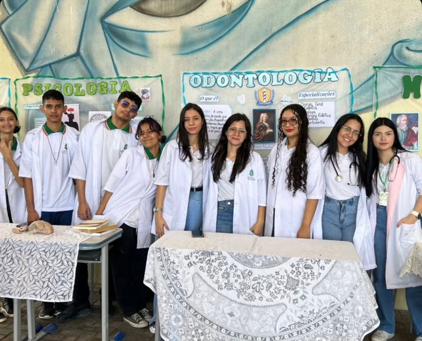

Feira das Profissões
Feira das Profissões movimenta os terceiros anos da escola
Nesta semana, nos dias 21, 22 e 23/05, os alunos dos terceiros anos do Ensino Médio da EEEP Francisco Aristoteles de Sousa darão um show de criatividade, pesquisa e inspiração na tão esperada Feira das Profissões. O evento, que já é tradição na escola, tem como objetivo aproximar os estudantes do mundo profissional, ajudando-os a refletir sobre o futuro e a explorar as diversas possibilidades de carreira.
Cada turma ficou responsável por apresentar profissões escolhidas a partir dos próprios interesses. Com estandes temáticos, painéis interativos e apresentações ao vivo, os alunos vão compartilhar curiosidades, áreas de atuação, formação necessária e até depoimentos de profissionais convidado
A feira é aberta a toda a comunidade escolar e promete ser um espaço de troca, aprendizado e empolgação, onde vocações podem ser descobertas e talentos, despertados. Professores, pais e alunos dos anos anteriores estão ansiosos para prestigiar o evento.
“É muito bonito ver os alunos se engajando, pesquisando com profundidade e se expressando com tanto entusiasmo. A feira é mais que um projeto escolar: é um passo em direção aos sonhos de cada um deles”, destacou uma das professoras organizadoras.
Todos estão convidados a participar e se inspirar com o futuro que está sendo construído.